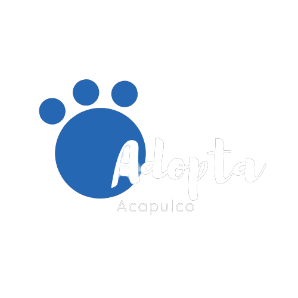
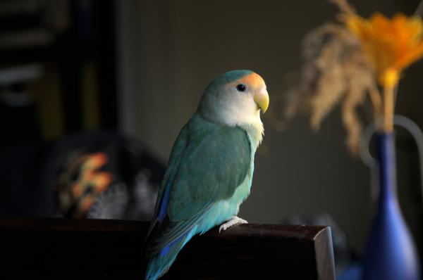
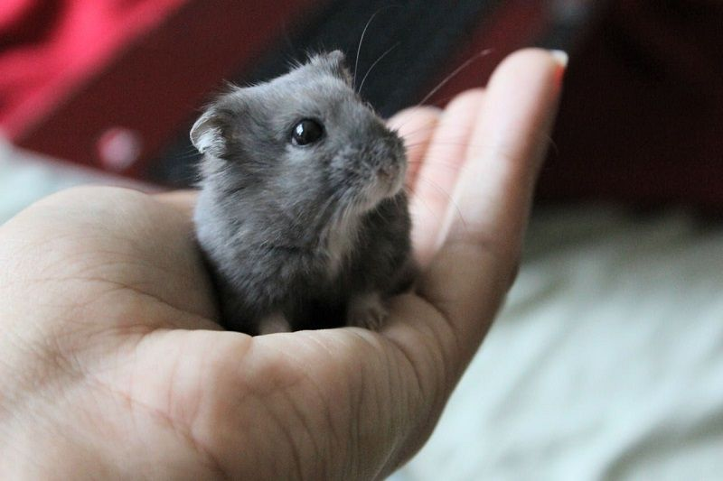

¿Por qué adoptar una mascota?
Detalles
Salvas una vida
En muchos casos los animales sin hogar son sacrificados.
Mejorará tu ánimo
La convivencia y el amor incondicional de tu mascota te mantendrá positivo y alegre.
¡Desliza y adopta!

Nombre
Lugar
Adoptame
Nombre
Lugar
Adoptame

Nombre
Lugar
Adoptame

Nombre
Lugar
Adoptame

Nombre
Informacion
Tus Adopciones
4
Tus Certificaciones
AP
Ha adoptado más de..
BA
Ha adoptado más de..
AE
Ha adoptado más de..
D
Ha donado 1 o más...